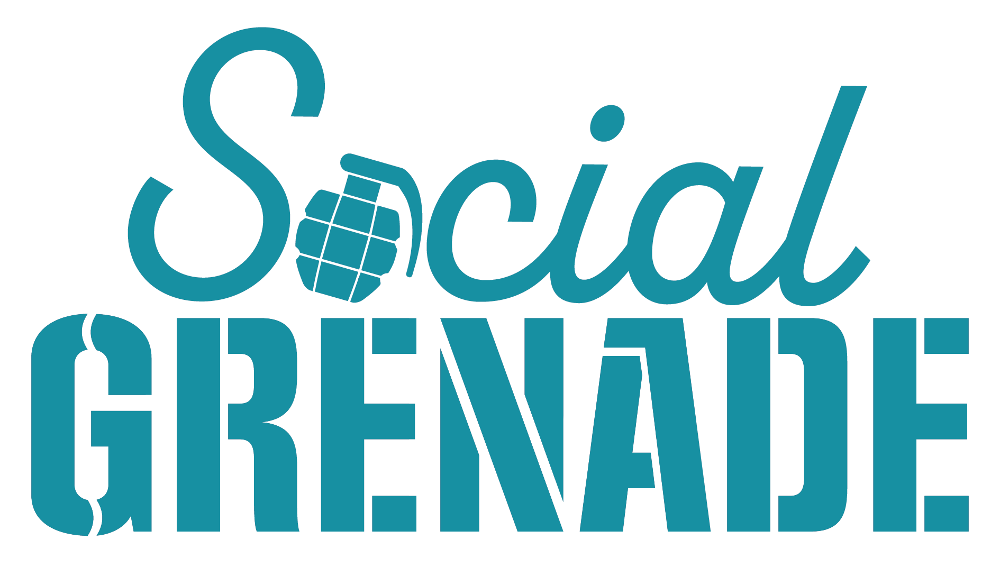

The point is not to pretend Lucy replaces a strong engineering workflow. The point is to use Lucy where context, coordination, drafting, packaging, and fast deployment support create leverage for Robin and the team.

Gunner’s critique is fair if the benchmark is raw front-end build efficiency. Lucy becomes more valuable when the job includes memory, content, organization, brand handling, deployment coordination, and non-technical team support.
Lucy carries forward brand voice, workflow rules, file organization, recent decisions, and deployment patterns. That continuity matters when the work is spread across content, ops, creative, and publishing instead of sitting in one person’s head.
If everything is already scoped, spec’d, and ready, a strong direct stack run by an expert operator can absolutely be faster. That is not a threat to Lucy. It just means the tool should match the job.
These are the kinds of tasks where Lucy is not just a novelty — Lucy is useful.